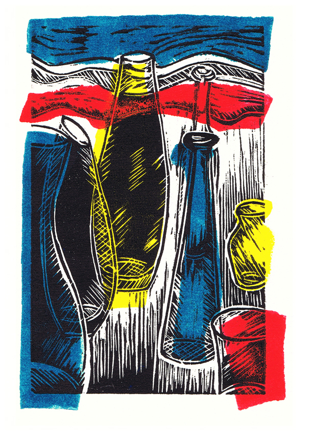

When it comes to my artist practice I experience myself increasingly as a mixed-media person.
I enjoy to experiment with painting, photography, digital design, printmaking, sculpture, collage/assemblage and also combined techniques.
Re-occurring themes are symmetry, layering, transparency and a play with the viewer’s perception.
There is a focus on repurposing / recycling in terms of the motives and materials I’m using.
I was born in the Lower Rhine Valley near Duesseldorf (Germany).
After initial professional years in the 1980-ties as a Customs Officer - at that time first exhibitions of surrealism influenced pencil / crayon drawings.
I studied in the field of Product / Textile design at the University of Applied Science Niederrhein in Krefeld.
Parts of my studies were drawing/painting classes and also training on the subjects of photography, textile printing and weaving. During that period further exhibitions – solo and together with fellow students - followed.
After leaving university as Qualified Designer I worked in several companies, specializing in textile accessories and corporate fashion/work wear.
Since early 2008 I have been living and working in New Zealand, now based in Lower Hutt.
In my artistic work I’m venturing into a variety of techniques and materials – printmaking, photography, painting, collage, digital design and also sculpture. I am influenced by artists like Renee’ Magritte, M.C. Escher, Pierre et Gilles, Andy Warhol as well as Gilbert and George.
I’m a Diploma graduate of The Learning Connexion in Lower Hutt, currently completing my Advanced Diploma studies of Art and Creativity and also a member of the Hutt Art Society and the Print-Council Aotearoa.
My artwork is represented in private collections in New Zealand, Australia, Japan, the Netherlands, Norway and Germany.
Solo Exhibitions:
- “Hexa-gone-crazy” – Printmaking/Collage/Photography/Sculpture, Odlin Gallery, Lower Hutt – 2017
- “Hidden views and found objects” – Photography, Odlin Gallery, Lower Hutt – 2015
- “Layer – Detail – Dimension” – Printmaking/Photography/Collage, Odlin Gallery, Lower Hutt – 2014
- “Relocate – Reflect – Recollect” – Photography/Collage/Woodcut Print, Foyer Gallery/ Hutt Art Society, Lower Hutt - 2013
- “Dollhouse revisited” – Photography, Farsite Gallery, Petone – 2012
Group Exhibitions:
- “59” – A collaboration with Linda Evangaline Smith, Thistle Hall, Wellington - 2017
- ”Monochrome” – Photography/Print, Matchbox Studio, Wellington – 2017
- “The 2016 Day 100 Show” – Photography, Pop-up Gallery, Lower Hutt – 2016
- “Minoh Art Association Exhibition” – Printmaking,
- Exchange exhibition with the sister city of Lower Hutt, Minoh (Japan) - 2016
- “Reflect” – Photography, Communal Space 17 Tory, Wellington – 2016
- “Impressions V” – Printmaking, Odlin Gallery, Lower Hutt - 2015
- “The 2014 Day 100 Show” – Photography, Re-Space, Wellington – 2014
- “Pattern” at Matchbox Gallery Wellington – 2014
- “About Space”-HAS-Project – 2014
- End-of-term Exhibitions – Photography, Painting, Sculpture, Printmaking
The Learning Connexion, Lower Hutt - 2014 - 2016
- “Impressions III” – Printmaking, Odlin Gallery, Lower Hutt - 2013
- “The 2013 Day 100 Show” -Photography, The Nathan Club, Auckland - 2013
- “Kitsch” at Matchbox Gallery Wellington – 2013
- “Impressions II” – Printmaking, Odlin Gallery, Lower Hutt - 2012
Email - circular4tlc@gmail.com